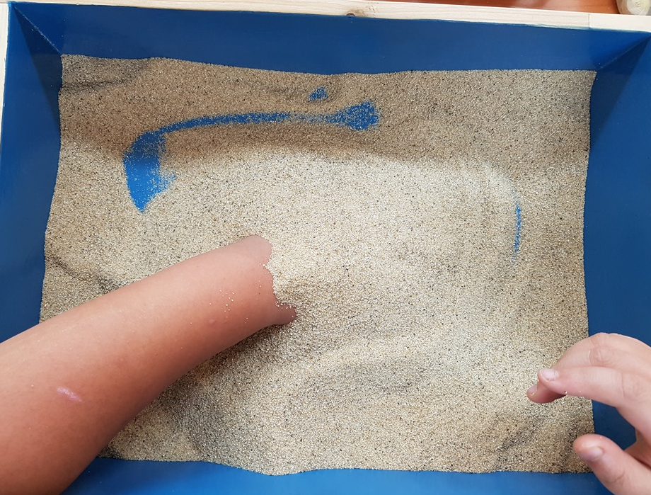

초등학교 6학년 아동에게 학교 적응 문제와 또래 관계의 중요성은 그들의 사회적, 정서적 발달에 있어 핵심적인 요소이다. 이 시기 아동들은 사춘기에 진입하며 신체적, 정서적 변화를 겪는 동시에, 학업 부담과 또래 집단 내에서의 위치에 대한 인식이 커지기 시작한다. 이러한 변화는 학교 적응과 또래 관계에 직접적인 영향을 미치며, 아동의 전반적인 웰빙에 큰 영향을 미친다.
1. 초등 6학년 아동의 학교 적응
초등 6학년 아동의 학교 적응 문제는 아동이 학교 환경 내에서 요구되는 학업적, 사회적, 행동적 기대를 충족시키지 못할 때 발생하는 형태는 다음과 같다.
1) 아동이 교육 과정의 학습 목표를 달성하는 데 어려움을 겪거나, 시험 성적이 기대에 미치지 못할 때 발생한다.
2) 또래 집단과의 상호작용에서 어려움을 겪으며, 친구가 적거나 사회적 상호작용에서 자주 배제되는 경우에 생긴다.
3) 규칙을 따르지 않거나, 공격적인 행동을 보이며, 교사나 동료와의 갈등을 경험한다.

2. 초등 6학년 아동의 또래 관계
이 시기의 아동이 건강한 발달을 이루기 위해서는 부모, 교사, 상담사와 같은 성인의 지지와 안내가 필수적이다. 아동이 겪는 변화를 이해하고, 자신의 정체성을 긍정적으로 발달시킬 수 있도록 도와야 한다. 또한, 초등 6학년 시기에 따른 학교적응과 또래 관계에서의 어려움을 극복할 수 있도록 지원해야 한다.
1) 협상, 타협, 공감 능력과 같은 사회적 기술은 또래와의 상호작용을 통해 발달한다. 이 기술들은 아동이 사회적 환경에 적응하는 데 필수적이다.
2) 긍정적인 또래 관계는 아동이 자신에 대해 긍정적인 자아상을 구축하도록 돕는다. 친구들과의 성공적인 상호작용은 자신감과 자아 존중감을 높인다.
3) 또래로부터 받는 지지와 이해는 아동이 정서적 어려움 극복, 친구들과 감정 공유, 위로와 격려를 제공하는 출처가 된다.
3. 학교 적응과 또래관계 해결 전략
학교 적응과 또래 관계 문제를 해결하기 위한 전략은 교사, 부모, 상담 전문가가 아동의 학교 적응과 또래와의 상호작용에서 필요한 사회적 기술을 배울 수 있도록 부모와 교사가 협력하여 아동의 학교 생활과 관련된 문제를 해결하고, 긍정적인 학교 환경을 조성이 필요하다. 이에 아동이 정서적 어려움을 표현하고 해결할 수 있는 안전한 환경 제공을 위한 집단 및 개인적인 다양한 프로그램을 통하여 사회적, 정서적 지원을 통해 또래 관계를 건강하게 형성하고 전반적인 발달을 도모할 것이다.
4. 형제 관계의 특징과 부모와의 관계
초등학교 6학년 아동은 사춘기에 접어들면서 신체적, 정서적 변화가 급격히 일어나는 시기를 겪는다. 이 시기에 형제 관계와 부모와의 관계는 아동의 발달에 중요하다. 이 두 관계 유형은 아동이 사회적 기술을 발달시키고, 정서적 지원을 받으며, 자아 정체감을 형성하는 데 기여하기 때문이다.
1) 초등 6학년 형제 관계의 특징
(1) 형제 사이의 관계는 이 시기에 더 역동적으로 변할 수 있다. 아동이 독립성을 추구하면서 형제와의 경쟁, 협력, 비교 등 다양한 상호작용을 경험한다.
(2) 형제 간의 갈등은 자연스러운 일이다. 이는 자신의 감정과 욕구를 표현하고 타인의 관점을 이해하는 기회가 될 수 있다. 화해 과정은 사회적 기술과 감정 조절 능력을 발달시킨다.
(3) 형제는 서로에게 정서적 지원과 보호를 제공할 수 있다. 특히 부모가 없는 상황에서 형제는 서로를 돌보고, 안정감을 제공하는 역할을 한다.
(4) 형제 중 누군가는 다른 형제에게 역할 모델이 될 수 있다. 이는 긍정적인 영향을 줄 수도 있지만, 때로는 부정적인 행동을 모방하는 원인이 될 수도 있다.
2) 부모와의 관계 형성의 중요성
(1) 부모와의 긍정적인 관계는 아동이 신체적, 정서적 변화를 겪는 이 시기에 안정감과 안전함을 느끼게 한다. 이는 자신감과 자아 존중감을 키우는 데 중요하다.
(2) 아동은 부모로부터 정서적 지원과 격려를 받아야 한다. 이러한 지원은 아동이 학교와 사회에서 겪는 스트레스와 도전을 극복하는 데 도움이 된다.
(3) 부모와의 개방적이고 솔직한 대화는 아동이 의사소통 기술을 발달시키는 데 기여한다. 이는 아동이 자신의 생각과 감정을 표현하고 타인의 관점을 이해할 수 있다.
(4) 부모는 아동의 가치관과 도덕성 형성에 영향을 미친다. 부모의 태도, 행동, 그리고 그들이 전달하는 메시지는 아동의 세계관과 자신의 행동을 결정하는 기준이 된다.
초등 6학년 아동의 형제관계, 부모와의 관계는 아동 자신이 건강하게 성장하고 발달하는 데 필수적이다. 이러한 형제 관계와 부모와의 관계에서 긍정적인 상호작용과 적절한 지원은 사회적 기술을 발달시킨다. 특히, 신체적 변화에 따른 다양한 정서와 감정을 조율할 수 있으며, 자신의 정체성을 긍정적으로 유지한다. 따라서 이 시기에 스트레스가 증가하지 않도록 자신의 감정과 경험을 표현할 수 있는 한다. 가정에서 안전한 환경을 제공하되 형제관계와 부모와의 관계를 잘 유지하고 올바르게 성장하도록 지원하는 것이 중요하다.
2024.04.08 - [상담] - 초등 6학년 아동기 - 신체적, 사회적, 정서적 특성
초등 6학년 아동기 - 신체적, 사회적, 정서적 특성
초등학교 6학년 아동은 대체로 11~12세에 해당하는데, 이 시기는 신체적, 사회적, 정서적으로 급격한 변화가 일어나는 시기이다. 이 단계의 아동은 학교생활과 또래 관계에서 다양한 도전과 기회
think-sis.co.kr